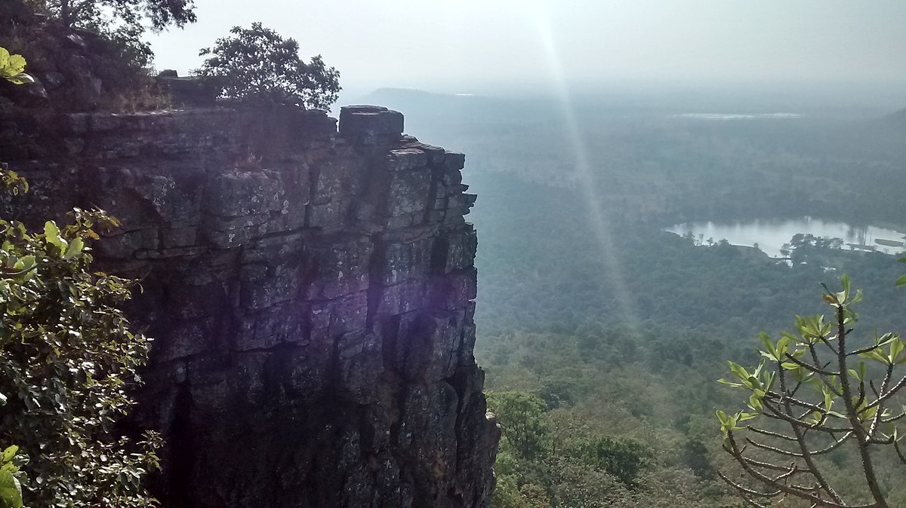

Seven Sister Hills
Seven Sister Hills
Most delightful sights of Natural Beauty lies here. Registered name is “Perjagadh”. A 35km long and 459m tall mountain lies at the end of Nagbhir Tahsil. If seen from long distance, it seems like fortress as its top has large rocky layers. Name satbahini means seven sisters which are Ambai, Nimbai, Muktai, Lakshmi, Saraswati, Mahakali and Durga. Their residential caves and temples are still there from ancient times. Every year from 1964, nearby people gather together for festivals like MakarSankranti and MahaShivratri. From top of hill, one can witness Sunset and Sunrise at specific time of day. Also there is presence of wild animals and birds during daytime.
About

Maharashtra is the hub of hill stations in India and famous for natural tourist destinations. Maharashtra has dangerous trekking places on beautiful hills and I explored one of them which is Seven Sisters hill and known as Satbahini Dongar in the local area. This mountain is situated at Perjagadh near Nagpur, and its 459m tall and 35 km long mountain range up to Nagbhir Tehsil.
Seven sisters lived on this mountain named Ambai, Nimbai, Muktai, Lakshmi, Saraswati, Mahakali and Durga and some local people told me that these sisters used to live in the caves of the hill in ancient times and they died by jumping from the hill Hence the name of this place is Seven Sisters Hills.
Seven Sisters Hill is situated in the forest area of Parjagarh and here you can see complete
greenery all around you. You can reach here through a booked taxi , personal car and two wheeler
from nearest town Chimur and nearest cities Nagpur and Chandrapur.
> Nearest Bus stand is Chimur from here Seven Sisters Hill is 27.5 km far
> Nearest Railway Station is Nagpur and Chandrapur.
> Seven Sisters Hill is 106 km far from Nagpur Railway Station, so you can visit there directly
through a booked taxi.
> Seven Sisters Hill is 100 km far from Chandrapur Railway Station, so you can visit there directly
through a booked taxi.